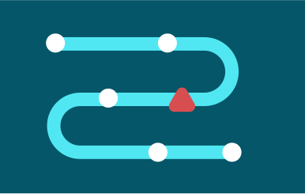

Sludge audits
Sludge audits identify and measure the impact of “sludge”—unnecessary friction or barriers in government processes—and produce evidence-based recommendations on how to reduce it. Removing sludge leads to greater efficiencies and better experiences for both citizens and public servants.
Overview
-
What are sludge audits?
Sludge refers to unnecessary frictions or barriers in a process that impose extra time, effort, or cost. Sludge slows things down - whether it’s a complex form, an unclear instruction, or multiple redundant approvals.
Sludge audits are systematic and structured processes that find and remediate sludge to ensure outcomes are achieved.
Our work improves both sides of service delivery:
- For citizens: services become faster, clearer, and easier to navigate.
- For public servants: processes become more efficient, freeing up time for high-value work and reducing administrative burdens.
Whether the process is internal or public-facing, existing or prospective, we work with our partners to find solutions that are grounded in evidence, and shaped by real-world feedback.
 -
Why it matters
Even well-designed processes can be difficult to navigate if there’s too much red tape. Left unaddressed, sludge can lead to:
- Lower uptake or program participation
- Unequal access among different groups
- Increased administrative costs and staff burden
- Delays and poor user experience
- Reduced trust in public institutions
Removing sludge helps support a better citizen experience by ensuring processes are clearer and more efficient—making life easier for everyone.
-
What we do
We support departments and agencies to examine how processes are delivered—and how they’re experienced by the people who use them. Our audits help answer questions like:
- How much time and effort does each step require?
- Where do users or employees get stuck?
- What steps are redundant or unclear?
- Where are opportunities to simplify, clarify, or re-sequence?
Our comprehensive sludge audit services include:
End-to-end user journey mapping
Estimation of time and friction at each step
Identification and prioritization of pain points
Co-design of improvements with partners
Focus groups, interviews and usability testing
Testing of solutions before full rollout
Support with implementation and scaling
Lost productivity costs
-
How we work
We follow a five-phase approach that’s flexible and collaborative. Each project is shaped by the specific context and goals of the partner.
-
1 Identify
We start by defining the process and setting the scope for the audit. This includes:
- Clarifying the beginning and end points of the process
- Identifying key people involved (staff, service users, etc.)
- Reviewing existing documentation and data
- Forming a working group to guide the audit
-
2 Understand
Next, we collect information to better understand how the process works in practice—and where the biggest burdens are. We look at:
- Step-by-step experience from both user and employee perspectives
- How long each step takes to complete
- How easy or difficult steps are for users
- The costs involved, including time and effort
- Where and why delays, confusion, or drop-offs happen
We also examine how the process affects different groups, to ensure that proposed improvements support equity and inclusion.
-
3 Design
Based on the findings, we work with our partners to develop practical ways to reduce sludge. This might include:
- Rewriting confusing language
- Reordering steps to make them more logical
- Removing unnecessary actions, approvals or touchpoints to complete
- Creating clear guidance or support tools
We focus on changes that are easy to implement and make a meaningful difference.
-
4 Test
Where possible, we help implement the proposed changes and assess their impacts. We recommend testing the changes before implementing them at scale so our partners can develop confidence in the changes and ensure they meet users’ needs.
-
5 Scale
Once solutions are tested and refined, we can support implementation. We also assist in sharing lessons learned to inform broader changes, and to future improvements across government.
-
Projects

Publications


Interested in running a sludge audit or learning more?
Get in touch to explore how we can support your goals. Work with us.
Work with us